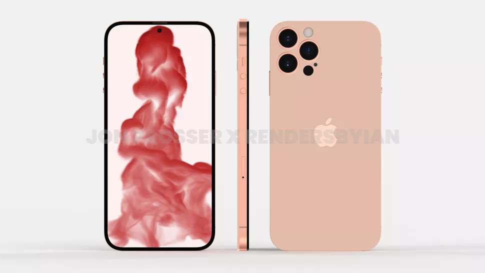
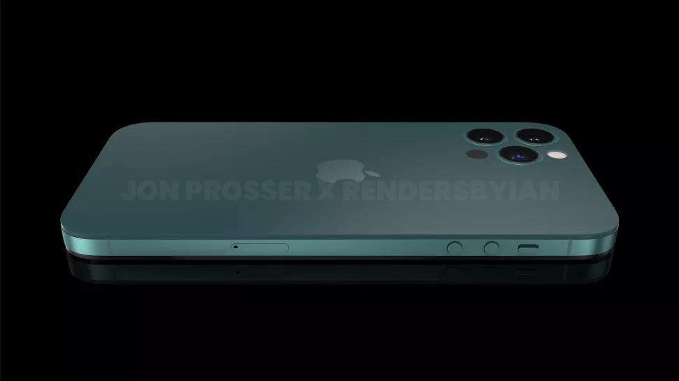
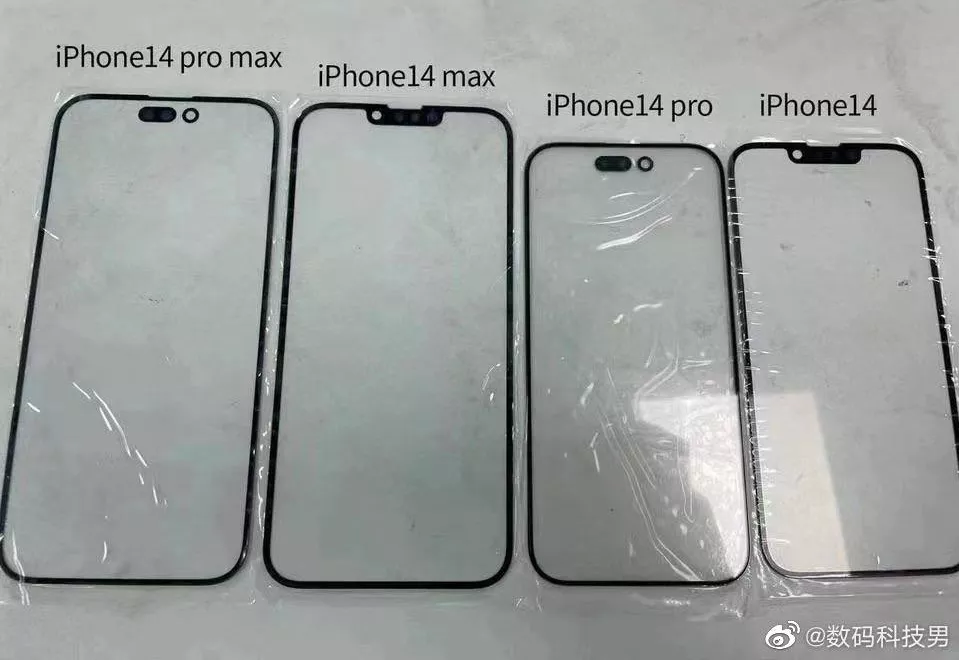

As we already know that new iphone will come in september launch event. Here is what we can expect from the latest upcoming apple's flagship phone of 2022
Here are some photos that shows what we can expect from the iphone 14 lineup these photos and information are from top analysts.
According to Jon Prosser and his Front Page Tech video, the iPhone 14 will look like an iPhone 12 crossed with an iPhone 4, in that it'll stick with flat edges. But those edges could include a mute button and a group of rounded buttons for volume central, harking back to the iPhone 4.
Supposedly, the sides of the iPhone 14 could be made out of titanium, which could make it tougher and stronger than the previous iPhones, whereas the back would retain the glass finish but seemingly with a satin-like finish.
Some schematics that show the iPhone 14 Pro models with the raised camera array being even bigger on the iPhone 14 Pro, and Ming-Chi Kuo claiming that a larger module is needed to house a 48MP camera, it doesn't look likely the standard iPhone 14 will get a set of cameras flush with its rear panel.
A few rumors have the iPhone 14 tipped to finally kill the display notch. But as it stands, it's now looking like only the iPhone 14 Pro will be notch-less, opting for a combination of a single circular camera cutout and a pill-shaped cutout alongside it to hold Face ID sensors.It may well have reduced bezels too, which would make the display look even larger.
These rumors were given more credence with what appears to be a leaked supply chain photo showing off the display panels for all four iPhone 14 models. While the iPhone 14 and iPhone 14 Max look set to keep the display notch, the iPhone 14 Pro and iPhone 14 Pro max appear to have killed the notch in favor of a combination of a pill-shaped cutout alongside what appears to be a punch-hole camera or sensor.
Similar to the Pro, MySmartPrice also obtained CAD renders of the regular iPhone 14. We assume that the iPhone 14 Max will also feature the same design in a body with a 6.7-inch display.
As you can see, these renders don't look a whole different than the iPhone 13 we have now. The notch is still slimmer and the rear cameras are stacked diagonally. In fact, it makes us wonder what's truly going to be different about the iPhone 14.
We're starting to hear some more about the iPhone 14 cameras, and the rumors are getting pretty interesting. One report from Apple analyst Ming-Chi Kuo tips a 48MP main sensor for the iPhone 14 Pro models, which would be a big jump from the 12MP camera on the iPhone 13. TrendForce, a Taiwanese research firm, backs up the 48MP main camera rumor, suggesting that megapixels matter once more to Apple — at least when it comes to the company's Pro phones.
But a regular Apple tipster has the standard iPhone 14 models tipped to stick with 12MP cameras, with only the Pro models expected to get a 48MP main camera.
In a more recent update from Kuo, all models of the iPhone 14 have been tipped to get an upgraded front-facing camera, which is set to feature a wider aperture (f/1.9 vs. f/2.2 on the current iPhone) and built-in autofocus. The former should help with capturing brighter photo and videos, while the latter should be a boon for video calls.
Dropping the Lightning port and going for USB-C has been a regular rumor for multiple iPhone generations, and for a while, it looked like that might happen with the iPhone 14. Multiple leakers had claimed the iPhone 14 Pro would come with USB-C, and it would seem logical that the standard iPhone 14 wold follow suit.
But the jury is still out on how likely this is. Analyst Ming Chi-Kuo reckons that there won't be an iPhone with Touch ID, or under-display Face ID, for another few years. This would have been pretty disappointing, as during these mask-wearing times, having an alternative to Face ID is very handy.
But with iOS 15.4, Apple has made it so that Face ID can recognize a legitimate user even when they are wearing a mask. it works remarkably well, meaning Apple may have bypassed the need for fingerprint-centric biometrics.